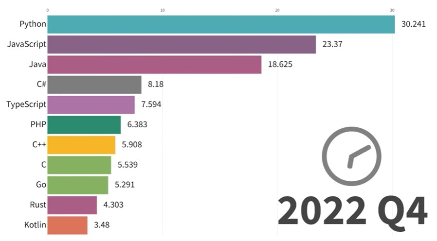
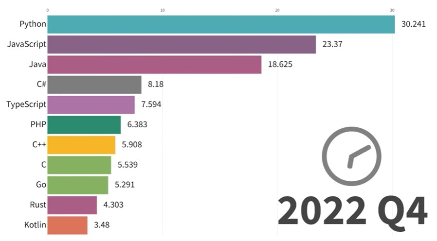

JavaScript関連技術
はじめに
自分が入社した当時、プログラミング言語はJavaが主流で、殆どJava一強という時代でした。
JavaScriptも人気のある言語でしたが、UI周りをちょっと便利にするという使い方（ポップアップを出したり未入力項目を赤字にしたり）が多く、サーバーサイドで業務処理を実装する時にはJavaがよく使われるという時代でした。
当時は人気の言語1位常連だったJavaが、いつの間にか1位から転落。最近では「Javaは時代遅れ」等という声が聞こえてくることもあります（個人的には時代遅れは言い過ぎな気もしていますが）。最近（2024年3月現在）は、PythonやJavaScript等が人気の言語上位にランクインしているのをよく見かけるようになりました。
以下は1965-2022年の人気言語の変遷の動画と、一部画像を抜粋したものです。
 

※画像は以下動画から抜粋。
Pythonは機械学習の分野で豊富なライブラリを提供しているから、AIの分野で現在人気なのはわかる。
JavaScriptはなんで人気なのか？自分が入社した時代から何が変わったのか？そもそもJavaScriptってクライアントサイドで動いているものなのでは？？
ぐらいの認識だったので調べてみました。
Webの歴史
Webの誕生とWebベースシステムの発展
Webは1991年にインターネット上に登場しました。誕生したばかりのWebは文章閲覧のためのものでしかなかったのですが、1990年代半ば以降、CSSやJavaScriptがWebブラウザに搭載されるようになりました。
同時期、CGIをはじめWeb向けのサーバーサイドプログラム技術が登場しました。これにより、データベースによるデータ管理、サーバーのHTML描画、クライアント（Webブラウザ）によるユーザーインタフェースという古典的なWebシステムが生まれます。Webブラウザをプレゼンテーション層としたWebベースによる三層アーキテクチャ型システムの登場です。
サーバーサイドはCGIから進化を続けます。Ruby on RailsのようなMVCベースのWebアプリケーションフレームワークも登場しました。Webシステムが洗練されていくにつれ、ECサイトやブログなどのようなWebサービスが提供されるまでに至ります。
これらの発展は重要ですが、Webフロントエンドにはあまり影響がありません。この当時、フロントエンドに求められていたのはCSSによる装飾、JavaScriptによるアラートや入力受付程度のものです。現代のようなフロントエンドを専門で開発するエンジニア職種はほぼ皆無でした。サーバーサイドを担うバックエンドエンジニアがほぼ全て開発していることが多かったでしょう。
Ajaxの登場
フロントエンドは見た目の補助をするだけというのが一時は常識でした。しかし、2005年にGoogle社が地図サービスGoogleMapsをリリースしてこの常識は覆されます。
GoogleMapsは当時としては革新的な、ページ遷移することなくWebブラウザ側で地図を拡大・縮小する機能を提供しました。Ajaxと呼ばれる、JavaScriptによってサーバーと非同期も通信する技術によって実現しています。同一ページ内でコンテンツが高速かつインタラクティブに動く、軽快なUXがAjaxによって提供されるようになります。
Ajaxの衝撃以降、クライアントサイドではAjaxとそれを活用したDOMの高度な操作が求められるようになります。それに応えるjQueryなどのライブラリが人気を集めました。
サーバーサイドにおいては、Webサーバーは従来のHTMLレンダリングだけでなく、RESTfulをベースとしたWeb APIも提供するようになります。
AjaxとWeb APIにより、よりリッチなWeb業務システムやWebサービスを構築するのが一般的になりました。Webブラウザ側でもJavaScriptを駆使して本格的なプログラムが書かれることになります。
この頃から開発のサーバーサイド、クライアントサイドの分業化が見られるようになります。クライアントサイドはWebフロントエンドとして確立していくようになりました。
HTML5, Node.js, ES2015, React以降の世界
00年代末から10年代にかけてWebはさらに複雑化、高度化していくことになります。HTML5, Node.js, ES2015, Reactの4つの視点からその過程を見ていきましょう。
HTML5の登場とWebアプリケーションプラットフォーム化
HTML5は2014年に勧告された仕様です。HTMLの文書仕様だけでなく、Web全体の仕様をアップデートする大きなムーブメントとなっていきました。HTML5では、Webをアプリケーションプラットフォームとしても機能させられるよう、HTML/CSSやDOM APIには強力な仕様変更が入れられました。
著者が最も重要だと考えているのがHistory APIです。History APIによって、ページの遷移をWebブラウザではなくJavaScriptでハンドリングできるようになりました。これによってコンテンツを画面遷移なしに、URLや履歴は管理しつつ切り替えるシングルページアプリケーションの構築が可能になりました。ネイティブアプリケーションのようなUXをエンドユーザーに提供します。
HTML5の登場とそれに伴うライブラリの進化などで、クライアントサイドにおいてもより強力な表現が可能となりました。
これを受けて、プレゼンテーション層のプログラムがサーバーサイドからクライアントサイドにシフトしていきます。従来サーバーサイドで行っていたHTMLの描画が、Web APIで必要なデータを取得すれば、クライアントサイドで可能となったためです。こちらの方が画面遷移の少なさなどによって、より優れた体験を与えられます。
Node.jsによるJavaScriptエコシステムの進化
2009年にはNode.jsが登場します。サーバーサイドの技術ですが、フロントエンドにも大きな2つの変化を与えます。
1つは今までブラウザに閉じられていた実行環境が広く使えるようになったことです。Node.jsはフロントエンドの開発、検証に非常に有用な環境です。JavaScript開発の質を飛躍的に向上させました。
もう1つはパッケージマネージャー、パッケージリポジトリであるnpmの普及です。JavaScriptで実装されたライブラリをnpm経由で利用できるようになりました。これによってモジュール（パッケージ）を適切に利用し、開発したものをモジュール化してnpm経由で配布する文化が育ちます。サーバーサイド、クライアントサイド問わずJavaScriptアプリケーションはNode.jsを利用して開発し、npmを介して提供されるようになります。
エコシステムが整備されたとこ、他にあげている同時期のWeb全体の躍進もあり、JavaScriptライブラリは活況を迎えます。ライブラリが多種多様に出現し、開発にそれらを用いることがWebフロントエンドエンジニアに求められるようになりました。
こういった活発なエコシステムは本来であれば歓迎すべきことです。しかしながら、初学者には変化が多い、学ぶことが多いと思われてしまう要素でもあります。
CommonJS
JavaScriptが抱えていた大きな問題の一つとして、て他のJSファイルを取り込む標準的な仕様が存在しなかったということが挙げられます。
分割したファイルや、外部JSファイルを読み込みたい場合、以下のようにHTMLファイルにscriptタグを書き込むことで別ファイルを読み込んでいました。
<script src="js/hoge_2.js"></script> // hoge.js を分割したファイル
<script src="js/hoge_3.js"></script> // hoge.js を分割したファイル
<script src="js/vender/fuga.js"></script>
<script src="js/vender/fuga-ui.js"></script> // fuga.js を前提に作られたファイル
このようにファイルが分割されていたり外部ファイルを読み込んでいる場合、
単純に上から順にファイルの読み込みが行われます。
問題点
① 変数名が被っていた場合、後から読み込んだファイルの変数名で上書きされてしまう。
→ 命名の衝突をさける為の名前空間と呼ばれる概念がない
② あるファイルをもとに別のファイルが作られていた場合、一方を修正するともう一方の処理が想定どおりに動かなくなってしまう。
→ 依存関係を解決する仕組みがない
こういった問題を解決するためCommonJSと呼ばれるプロジェクトが発足し、様々なAPI仕様が作られて行きます。
①の問題については、この時に作られたモジュールAPI仕様が解決することになります。
モジュールを読み込む方法（CommonJS）
CommonJS に従って作られた新たなJavaScriptでは、 export、require 機能が使えます。
export について、モジュール側はmodule.exportsに関数やクラスなどを定義します。
console.log('Hello World！');
}
読込む側はrequire([先ほどのモジュールを定義したファイルパス])で読み込みを行います。
helloWorldModule();
// 出力：Hello World！
モジュールを読み込む方法（ES2015）
同じ export でも CommonJS のものとは記法が違い、モジュール側では通常通り関数やクラスを定義し、頭にexportを付けます。
console.log('Hello World！');
}
読み込み側ではimport文を使って先ほどのモジュールを読み込みます。
helloWorld();
// 出力：Hello World！
ES2015によるプログラミング言語としての進化
Webフロントエンド開発が高度化するなかで問題になるのがJavaScriptの言語機能の貧弱さです。
JavaScriptは本格的なアプリケーションを作成する上ではやや物足りないところもありました。そこで大々的なアップデートが求められ、登場したのがES2015です。
ES2015はJavaScriptの歴史上でも最大のアップデートでした。構文が増え、constやletの普及など、書き方も大々的に変わることになります。JavaScriptの仕様が増えるということは、表現力が増すと同時に覚えることも増えるということです。
仕様が提案されてすぐ全てのブラウザに実装されるわけではありません。しかし、多くの仕様はJavaScriptへの不満を解消する魅力的なものです。そこでこういった仕様をブラウザ実装に先駆けて利用しようとする動きが広がります。
Babelはこのニーズに応えるJavaScript to JavaScriptのコンパイラです。次世代のJavaScriptを、まだその仕様を実装していないブラウザで動作するJavaScriptに変換します。
言語自体の複雑さもさることながら、ES2015以降の仕様の人気でコンパイラの需要が高まりビルド過程が複雑になってしまいました。
高度な表現ができるようになることは望ましいことですが、これもやはり学習コストの増大という二面性を持ちます。
2015年に標準化されたためES2015という名称になった。ES6とも呼ばれる。
letとconst, for...of等、様々な構文が導入された。
letとconstは変数の宣言に使用する構文で、これまで使用されてきたvarに変わるもの。
console.log(name); // => soarflat
name = 'SoarFlat'; // 再代入する
console.log(name); // => SoarFlat
var name = 'SOARFLAT'; // 再宣言をする
console.log(name); // => SOARFLAT
console.log(name); // => soarflat
name = 'SoarFlat'; // 再代入する
console.log(name); // => SoarFlat
let name = 'SOARFLAT'; // 再宣言するとエラーになる
console.log(NAME); // => soarflat
NAME = 'SOARFLAT'; // 再代入するとエラーになる
varは下位互換のために残しているが基本的には使用しない。
Promise
参考：Qiita ES2015(ES6) 入門
Reactをはじめとするフロントエンドライブラリの出現
ここまで紹介してきたように、フロントエンドを取り巻く仕様、技術は高度化しています。これらが可能になったことで、アプリケーション、サービスにおいても複雑な要件が求められるようになります。
アプリケーションデータフローをフロントエンド側で受け持つなど、設計段階から難易度が上がります。DOMをWeb APIと連動させて適切に書き換えるのも考えなしにはできません。
こうなってくるとアプリケーションの構造化を持たないjQueryのようなライブラリでは力不足です。このため、MVCのようなアプリケーションの構造を持ったフレームワークが必要とされるようになります。Backbone.js, AngukarJAなどの新たなWebアプリケーションフレームワーク、ライブラリが次々と出現します。
この流れで現れたのが、FacebookによるReactとFluxです。Reactはビューライブラリ、Fluxはアプリケーションアーキテクチャです。Reactを中心とした開発スタイルは仮装DOMによってDOM操作を高速で快適なものに、Fluxによって混乱しがちなフロントエンドのアークテクチャに方向性を示したことで大人気となります。
Reactなどの登場によって、高度なフロントエンドアプリケーションの開発はjQueryで無理矢理に作るよりも構造化しやすくなりました。ここで新しく登場するのが、学習コストの問題です。
新しいフレームワーク・ライブラリを使う以上、学習コストは発生して当然のものです。ReactもAPIを小さく保つなど学習コストをむやみに増やさない設計をしています。しかし、JSX、データフローに関する知識、ライブラリの選定とそれぞれの学習など、React導入に当たって少なくない知識が必要とされるのもまた事実です。これは各ライブラリ固有の問題ではないですが、モジュール化、ビルド、静的構文チェック、テストなどの開発環境のセットアップも確実に必要になってきます。
AltJSの登場
ES2015と前後して登場したのがJavaScriptに変換できる、AltJSと呼ばれるプログラミング言語です。より簡潔な構文を目指したCofeeScript、型を注釈として付与するTypeScriptが有名です。
特にTypeScriptは現在の開発で広く使われるようになりつつあります。
現在の課題とVue.js
現在のフロントエンド開発は次のような進化、課題を抱えながら現在に至っています。相互に影響しあっている部分もあります。これらはアプリケーションとして高度になる上では避けられないところでもあります。
- HTML5以降のアプリケーションプラットフォームとしてのリッチ化と、それに伴うAPIの高度化
- Node.jsエコシステムの発展と、開発環境構築の難化
- ES2015以降のシンタックスの強化と、覚えることの多さ
- React以降のフロントエンド開発のフレームワーク化と、フレームワークにまつわる学習コスト
フロントエンドの課題の変遷
| 時期 | フロントエンドの役割 | サーバーの役割 | JavaScriptライブラリ・フレームワーク |
|---|---|---|---|
| Webシステム初期 | 装飾 | HTMLの生成 | なし |
| Ajax期 | Ajaxを中心としたインタラクション | HTMLの生成＋API | jQueryやprototype.js |
| 現在 | アプリケーションのプレゼンテーション全般 | API | Vue.jsやReact, Angular |
関連技術
- 【工事中】jQuery
- nodejs
- TypeScript(AltJS)
- SPA(Single Page Application)
参考